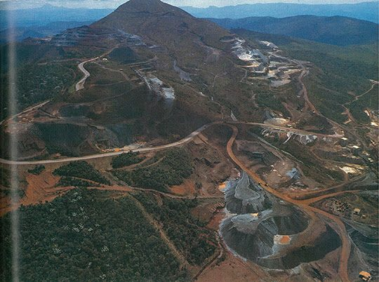
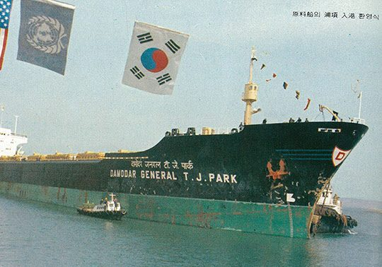
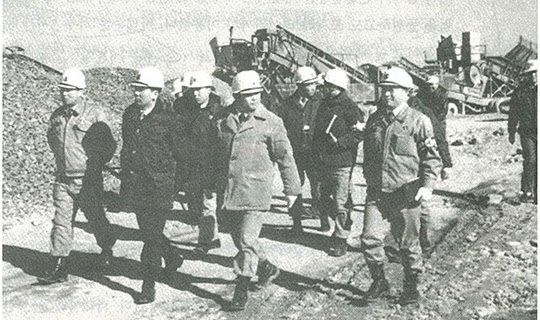

보도일 2015-01-28출처 조선일보 프리미엄조선 연재
1968년 4월 1일 ‘정부기관이 지배주주인 상법상 주식회사’로 포스코가 태어난 그때, 포스코와 지배주주(한국)는 자금(자본)이 없고 기술이 없고 경험이 없었다. 그래서 무(無)에서 출발한 포스코라 불리며, 그래서 포스코의 대성취를 ‘무에서 유를 창조했다’라고 부르고 있다. 그런데 그때 한국의 종합제철 프로젝트는 ‘3무 상태’가 아니라 ‘4무 상태’였다. 자금, 기술, 경험 그리고 ‘원료’마저 없었던 것이다.
쇳물 100만 톤 생산에는 철광석 170만 톤과 코크스용 유연탄 70만 톤이 고로 속으로 들어가야 한다. 한국은 상품성을 갖춘 철광석이 거의 없고 고로에서 태워야 하는 ‘코크스탄’의 원료인 유연탄(이를 ‘원료탄’이라 함)은 아예 없는 거나 마찬가지였다. 69년 10월 경제기획원의 종합제철사업계획연구위원회가 내놓은 보고서에도 유연탄은 전량 수입, 철광석은 연간 30만 톤 정도를 국내산으로 쓸 수 있는데 그나마 수입품과 섞어야 한다고 돼 있었다.
1970년 4월 1일 영일만 현장에서 박정희 대통령, 김학렬 부총리와 나란히 서서 착공 버튼을 누른 그 즈음부터 이미 박태준은 원료의 안정적 확보를 매우 중시하고 있었다. 그래서 그 뒤로 몇 차례 호주와 인도를 방문했던 그는 1971년 들어서 특히 봄날부터 여름날까지 호주에 머무는 날들이 길어졌다. 영일만에는 열연공장 기초공사가 한창이고 고로는 아직 설계도면으로만 존재하는 시기였다. 그러나 그는 원료공급 계약체결을 서두르고 있었다.
호주 광산업자들은 결코 녹록한 상대가 아니었다. 광산개발의 초기 비용이 어마어마한 규모이기 때문에 한국의 신생 포스코를 믿었다가는 개발비만 날리게 된다는 경계심으로 똘똘 뭉친 자들이었다. 박태준에게는 몹시 불리한 조건이었다. 그들의 경계심을 풀지 못하면 원료공급에 차질이 발생할 수밖에 없을 것이었다.

세상은 넓다. 그러나 동종의 비즈니스업계는 좁다. 포스코의 박태준이 당면한 원료문제에 대한 소문이 일본 철강업계에 퍼져 나갔다. 그러자 그에게 유혹이 왔다. 슬쩍 편하게 둘러갈 수 있는 방법이었다. 일본 미쓰비시상사가 수수료만 더 얹어준다면 무역업 형태로 위탁공급을 해주겠다는 것이었다. 박태준은 무엇보다도 자존심부터 팍 상했다.
비록 자본도 기술도 경험도 원료도 없지만 국가와 국민의 이름으로 도전하는 포항종합제철의 원료구매마저 일본에 의지하는 것을 스스로 용납할 수 없었다. 그는 어금니를 물었다. 원료구매에서 일본 철강업계보다 단 한 푼이라도 더 비싼 거래는 하지 않겠다. 그건 어림없는 일이다. 이렇게 자신을 다그쳤다.
다시 시드니로 날아가는 박태준의 출장 가방에는 호주 광산업자들의 마음을 움직이기 위한 비장의 무기가 들어 있었다. 황량한 공장부지 위에 세워둔, ‘제선공장’ ‘제강공장’ ‘열연공장’ 등 공장 위치를 알려주는 안내 표지판, 이걸 찍은 사진이 그것이었다. 그 사진이 광산업자들의 눈길을 끌어들일 수는 없었다. 그러나 그는 이 사진들은 박정희 대통령과 박태준 포철 사장이 한국 국민에게 내놓은 엄숙한 약속의 증표라고 했다. 이것이 그들의 장삿속으로 비집고 들어갈 틈을 만들었다.
박태준은, 포스코는 국가가 보장하는 국가적 프로젝트라는 점을 강조하며 자신의 진심과 정성을 솔직히 다 드러냈다. 한국여성과 결혼한, 주한 호주대사관의 상무관 케리를 시드니로 불러들이고, 시드니의 한국대사관도 열심히 뛰어다니게 했다. 뜻이 있는 곳엔 역시 길이 있었다. 그렇게 총력을 기울인 결실이 ‘일본 제철소들과 동등한 조건의 장기공급 계약’이었다.
그것이 박태준에게는 포스코를 성공시킬 수 있는 서광 같았다.(1973년 6월 8일의 1고로 화입을 기준으로 잡을 때 포스코는 호주와 인도에서 철광석 6개 브랜드, 미국과 캐나다와 호주에서 원료탄 6개 브랜드와 장기공급 계약을 체결하고 있었다. 첫 철광석은 1973년 4월 14일, 첫 원료탄은 1973년 2월 17일 각각 포항항에 입하된다.)

1971년 가을이 다가서는 영일만으로 돌아온 박태준은 가슴이 뿌듯했다. 그러나 열연공장 기초공사의 진도를 확인한 직후에는 갑자기 냉동고 속에 갇히는 것처럼 오싹해졌다. 열연설비를 공급할 미쓰비시중공업 책임자 우츠미가 조용히 건의했다.
“3개월 이상 지연된 기초공사 공기를 만회할 방법이 없습니다. 박 사장님, 설비 인도 계획을 공사 진도에 맞춰서 연기해야 합니다. 현재 계획대로 설비를 인도한다면 다른 곳에 보관해야 하는 문제, 나중에 대형 크레인을 다시 동원해서 옮겨와야 하는 문제 등 어려운 문제들이 따르게 됩니다. 물론 예산도 그만큼 더 소요됩니다.”
박태준은 시드니에서 커다란 알처럼 품고 온 희망이 산산이 부서지는 기분이었다. 그러나 그는 주먹을 쥐었다.
“아닙니다. 예정대로 싣고 오시오. 우리는 해냅니다.”
이 지점에서 박태준은 ‘열연비상’을 선포했다. ‘9월중에는 무조건 하루 700입방미터의 콘크리트를 타설할 것!’ 그때까지는 하루에 많아야 300입방미터였으니 두 배도 더 늘린 목표치였다. 새 목표를 달성하자면 밤낮을 가리지 말아야 했다. 지위 고하를 막론하고 현장에서 밤낮 없이 콘크리트 타설에 매달려야 했다.
박태준의 열연비상 선포는 일본 기술자들이나 현장 일꾼들에게 불가능한 선택, 너무 무리한 목표로 보였다. 그러나 오히려 과학적인 판단이었다. 비상 선포에 앞서 포항 일대의 콘크리트 배합용 모래와 자갈, 레미콘 차량, 강원도에서 실려 오는 시멘트 등 물적 자원과 인력의 현황을 면밀히 검토했던 것이다. 그보다 더 중요한, 보이지 않는 힘도 건재하고 있었다. 일꾼들의 정신력과 지도자의 솔선수범이 바로 그것이었다.
“회사가 죽느냐 사느냐 갈림길에 처해 있다. 우향우 하겠느냐? 조상들에게 얼굴을 똑바로 들겠느냐?”
박태준은 잠시도 멈추지 않았다. 작업화를 신은 채 사무실에서 새우잠으로 눈을 붙이기도 했다. 회사 부인회의 아낙들도 손수레를 끌었다. 비가 내리면 모두 판초우의를 뒤집어썼다. 심야와 새벽에도 현장은 불이 환했다.
9월 중순의 비 내리는 심야였다. 박태준은 트럭들이 길가에 일렬로 서 있는 것을 발견했다. 피곤에 지친 기사들이 운전대에 얼굴을 묻고 잠들어 있었다. 안쓰러웠다. 그러나 깨워야 했다. 어둠 속에서 졸다가 다가서는 사람이 사장인 줄 모르고 담뱃불을 빌리자는 일꾼도 있었다. 담배를 피우지 않는 그는 라이터를 빌려서 불을 붙여 주었다.
악전고투는 헛되지 않았다. 두 달 만에 다섯 달 걸려야 하는 콘크리트 타설을 마친 것이었다. 3개월 공기 지연을 완전히 만회한 1971년 10월 31일, 그 시월의 마지막 날, 비로소 박태준은 비상을 해제했다. 사장을 포함한 모든 일꾼이 막걸리 사발을 치켜들었다. 그들의 눈에는 빠짐없이 이슬이 맺혔다. 그러나 그것은 눈물이 아니었다. 우리도 할 수 있다, 우리도 뭉치면 된다. 그 뭉클한 마음이었다.
